pacman::p_load(sf, spdep,
GWmodel,
SpatialML,
rsample,
Metrics,
tmap,
tidyverse,
DT, knitr, kableExtra, gtsummary)1 Overview
Predictive modelling utilises statistical or machine learning techniques to predict outcomes. A set of known outcomes and predictors are used to calibrate predictive models.
Geospatial predictive modelling is conceptually rooted in the principle that the occurrences of events being modeled are limited in distribution. When geographically referenced data are used, occurrences of events are neither uniform nor random in distribution over space. There are geospatial factors (infrastructure, sociocultural, topographic, etc.) that constrain and influence where the locations of events occur. Geospatial predictive modeling attempts to describe those constraints and influences by spatially correlating occurrences of historical geospatial locations with environmental factors that represent those constraints and influences.
Learning Outcome
This exercise aims to build predictive models using geographical random forest. Along the way, the intended acquired skills are:
Preparing training and test data sets using sampling methods
Calibrating predictive models using both geospatial statistical learning and machine learning methods
Comparing and selecting the best model for predicting the future outcome and,
Predicting future outcomes using the best calibrated model
2 The Packages
| Package | Usage |
|---|---|
| sf, | For spatial data handling |
| spdep | For spatial data analysis |
| GWmodel | For calibrating geographical weighted family of models |
| SpatialML | For geographically weighted random forest regression |
| rsample | For creating and analysing resamples of a data set |
| Metrics | For machine learning metrics |
| tmap | Choropleth mapping; thematic maps |
| tidyverse | Attribute data handling |
| DT, knitr, kableExtra | For building tables |
3 The Data
Two data sets will be used in this hands-on exercise, they are:
| Type | Name | Source | Details | Screenshot |
|---|---|---|---|---|
| Aspatial | HDB Resale data | data.gov.sg |
|
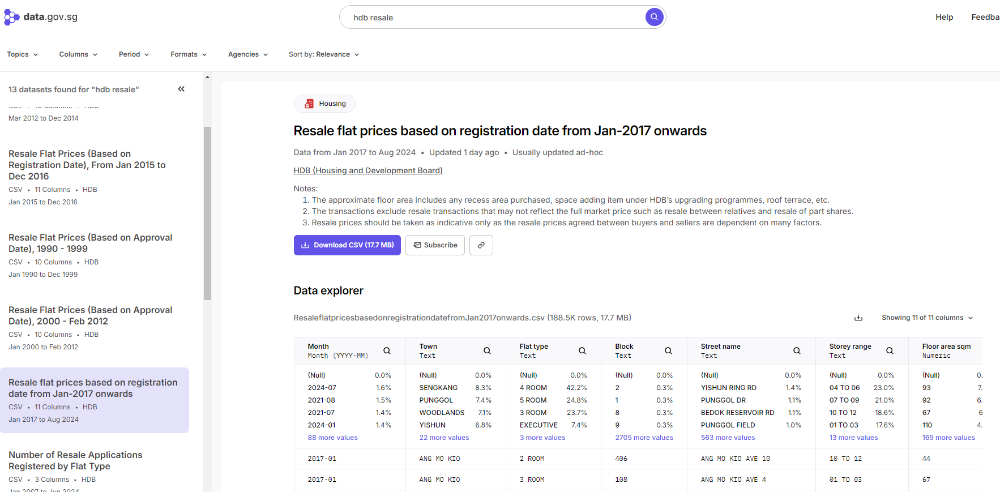 |
| Geospatial | Master Plan 2014 Subzone Boundary Web | data.gov.sg |
|
|
| Locational factors with geographic coordinates | Eldercare Services | data.gov.sg |
|
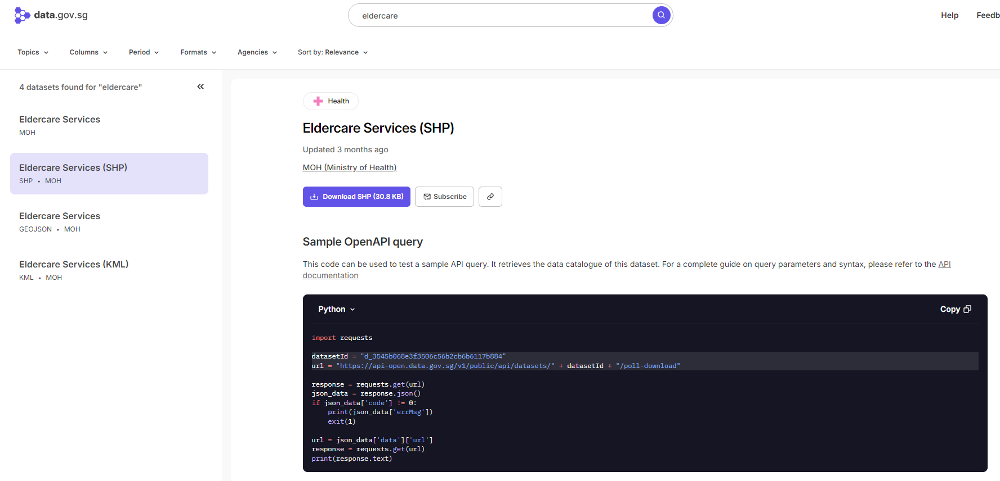 |
| Locational factors with geographic coordinates | Hawker Centers | data.gov.sg |
|
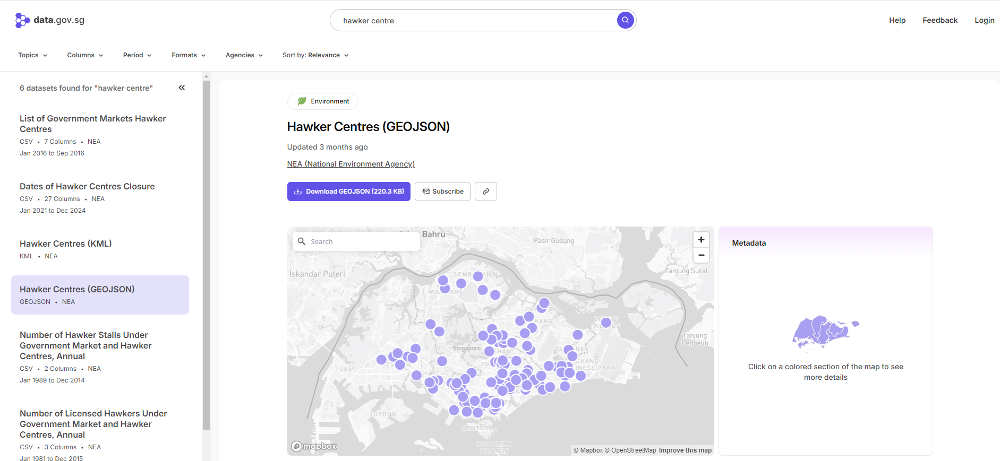 |
| Locational factors with geographic coordinates | Parks | data.gov.sg |
|
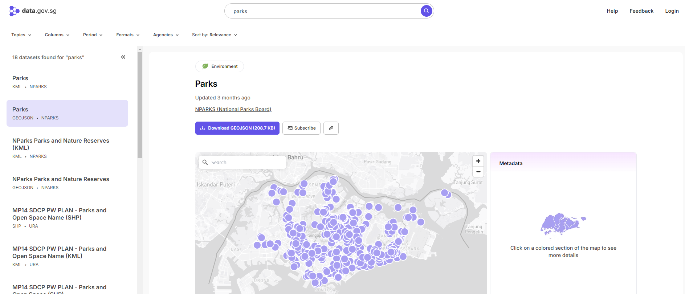 |
| Locational factors with geographic coordinates | Supermarkets | data.gov.sg |
|
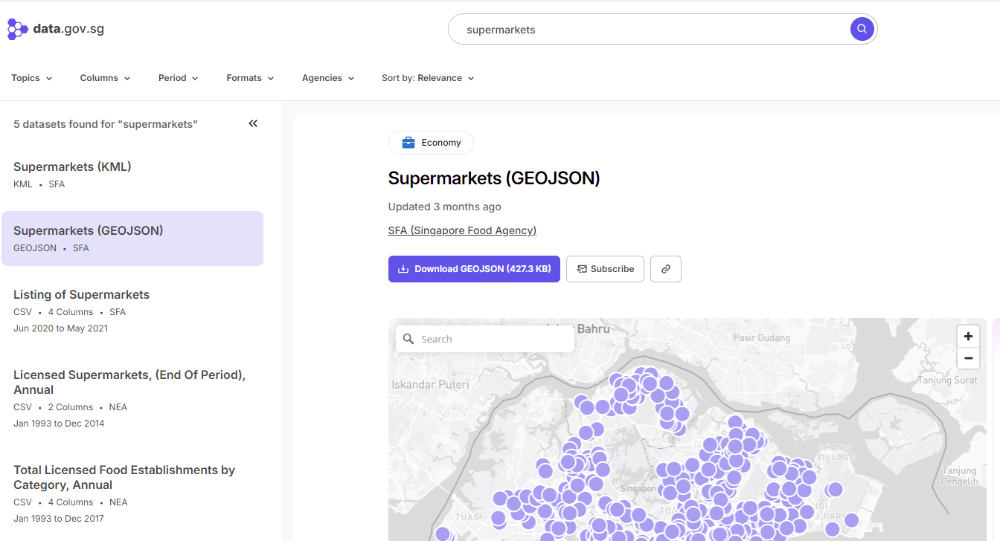 |
| Locational factors with geographic coordinates | CHAS Clinics | data.gov.sg |
|
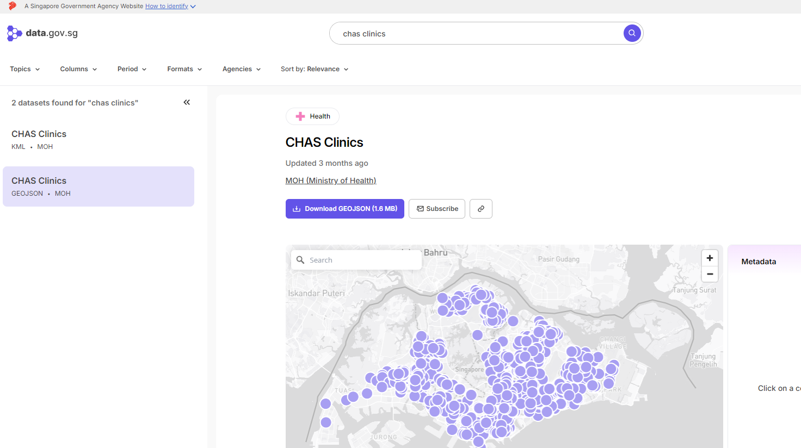 |
| Locational factors with geographic coordinates | Childcare Service | data.gov.sg |
|
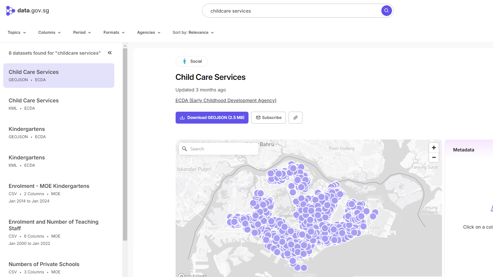 |
| Locational factors with geographic coordinates | Kindergartens | data.gov.sg |
|
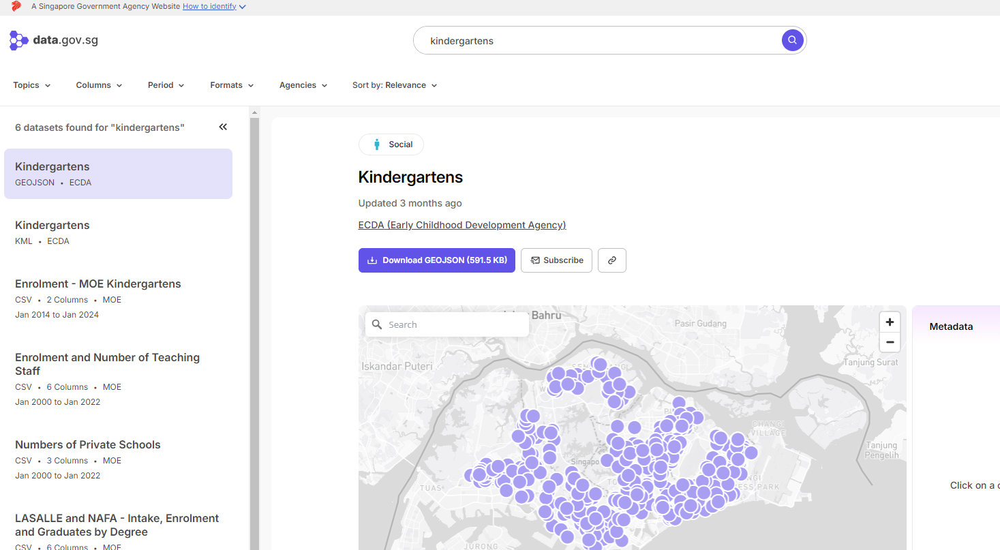 |
| Locational factors with geographic coordinates | Train Station | datamall.lta.gov.sg |
|
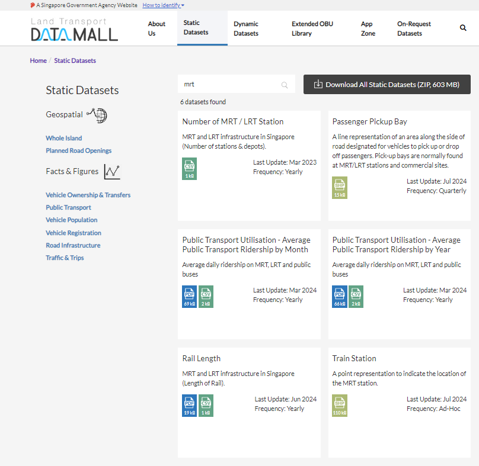 |
| Locational factors with geographic coordinates | Bus Stop Location | datamall.lta.gov.sg |
|
|
| Locational factors without geographic coordinates | Primary School | data.gov.sg |
|
|
| Locational factors without geographic coordinates | CBD Coordinates | |||
| Locational factors without geographic coordinates | Shopping Malls | Wikipedia |
|
|
| Locational factors without geographic coordinates | Good Primary Schools | Local Salary Forum |
|
mdata <- read_rds("data/aspatial/mdata.rds")mdataSimple feature collection with 15901 features and 17 fields
Geometry type: POINT
Dimension: XY
Bounding box: xmin: 11597.31 ymin: 28217.39 xmax: 42623.63 ymax: 48741.06
Projected CRS: SVY21 / Singapore TM
# A tibble: 15,901 × 18
resale_price floor_area_sqm storey_order remaining_lease_mths PROX_CBD
<dbl> <dbl> <int> <dbl> <dbl>
1 330000 92 1 684 8.82
2 360000 91 3 738 9.84
3 370000 92 1 733 9.56
4 375000 99 2 700 9.61
5 380000 92 2 715 8.35
6 380000 92 4 732 9.49
7 385000 92 3 706 8.96
8 395000 92 2 745 9.81
9 395000 93 4 731 10.3
10 395000 91 3 725 10.4
# ℹ 15,891 more rows
# ℹ 13 more variables: PROX_ELDERLYCARE <dbl>, PROX_HAWKER <dbl>,
# PROX_MRT <dbl>, PROX_PARK <dbl>, PROX_GOOD_PRISCH <dbl>, PROX_MALL <dbl>,
# PROX_CHAS <dbl>, PROX_SUPERMARKET <dbl>, WITHIN_350M_KINDERGARTEN <int>,
# WITHIN_350M_CHILDCARE <int>, WITHIN_350M_BUS <int>,
# WITHIN_1KM_PRISCH <int>, geometry <POINT [m]>Code chunk below shows a preview of the top 200 records:
4 Data Sampling
We can set a seed for reproducibility.
The entire data is split into training and test data sets with 65% and 35% respectively by using initial_split() from rsample package. rsample is one of the package of tinymodels.
set.seed(1234)
resale_split <- initial_split(mdata,
prop = 6.5/10,)
train_data <- training(resale_split)
test_data <- testing(resale_split)write_rds(train_data, "data/aspatial/train_data.rds")
write_rds(test_data, "data/aspatial/test_data.rds")train_data <- read_rds("data/aspatial/train_data.rds")
test_data <- read_rds("data/aspatial/test_data.rds")5 Computing Correlation Matrix
The code chunk below checks for any multicollinearity before using predictors in a predictive model. Multicollinearity refers to a situation where two or more predictors in a multiple regression model are highly correlated. If these variables are highly correlated, it can be difficult to disentangle the effect of each predictor on the response variable.
But first, we will need to remove the geometry column from our spatial data frame using the st_drop_geometry() function from the sf package. This is because the geometry column cannot be included in the correlation matrix.
mdata_nogeo <- mdata %>%
st_drop_geometry()colnames(mdata) [1] "resale_price" "floor_area_sqm"
[3] "storey_order" "remaining_lease_mths"
[5] "PROX_CBD" "PROX_ELDERLYCARE"
[7] "PROX_HAWKER" "PROX_MRT"
[9] "PROX_PARK" "PROX_GOOD_PRISCH"
[11] "PROX_MALL" "PROX_CHAS"
[13] "PROX_SUPERMARKET" "WITHIN_350M_KINDERGARTEN"
[15] "WITHIN_350M_CHILDCARE" "WITHIN_350M_BUS"
[17] "WITHIN_1KM_PRISCH" "geometry" Show the code
par(bg = '#E4D5C9')
ggstatsplot::ggcorrmat(
data = mdata_nogeo[, 2:17],
matrix.type = "upper",
type = "parametric",
colors = c("#E69F00", "white","#d5695d"),
tr = 0.2,
partial = FALSE,
k = 2L,
sig.level = 0.05,
conf.level = 0.95,
bf.prior = 0.707,
ggcorrplot.args = list(
tl.cex = 7,
pch.cex = 5,
lab_size = 3
)) +
theme(
axis.text.x = ggplot2::element_text(
margin = ggplot2::margin(t = 0.15, r = 0.15, b = 0.15, l = 0.15, unit = "cm")
),
plot.background = element_rect(fill="#E4D5C9",colour="#E4D5C9"),
panel.background = element_rect(fill="#E4D5C9",colour="#E4D5C9"),
legend.background = element_rect(fill="#E4D5C9",colour="#E4D5C9")
)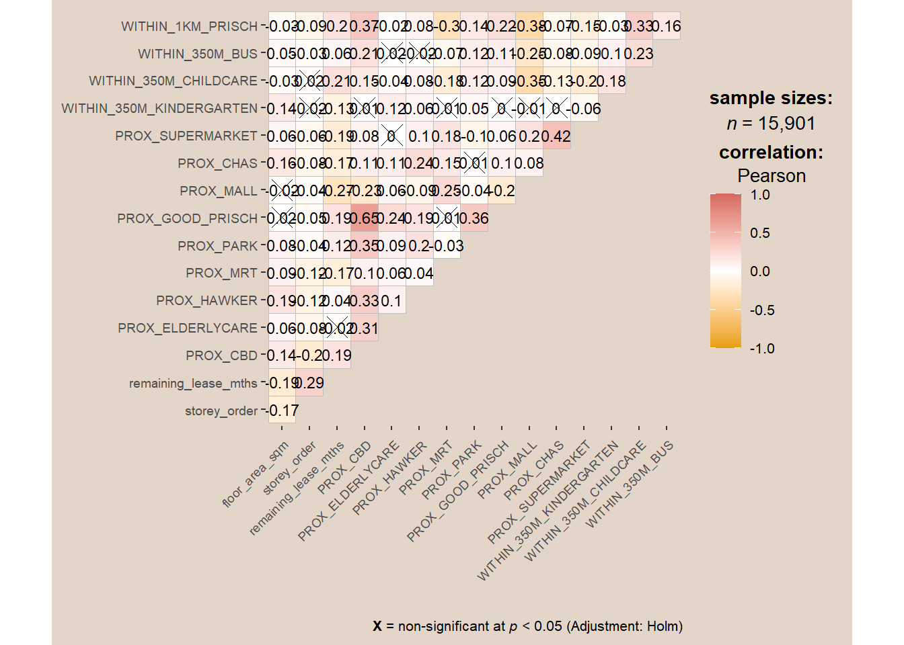
Observations
The correlation matrix above indicates all correlation values are below 0.8, so there is no sign of high multicolinearity.
6 Non-spatial multiple linear regression
In this section, we will be building a non-spatial multiple linear regression model. This type of model is a statistical technique that uses several explanatory variables to predict the outcome of a response variable. The goal is to model the relationship between the explanatory and response variables.
We will use the lm() function to build the model. The formula inside the lm() function specifies the model structure. The response variable (in this case, resale_price) is on the left of the ~, and the explanatory variables are on the right. The + operator is used to include multiple explanatory variables in the model.
price_mlr <- lm(resale_price ~
floor_area_sqm +
storey_order +
remaining_lease_mths +
PROX_CBD +
PROX_ELDERLYCARE +
PROX_HAWKER +
PROX_MRT +
PROX_PARK +
#PROX_GOOD_PRISCH +
PROX_MALL +
#PROX_CHAS +
PROX_SUPERMARKET +
WITHIN_350M_KINDERGARTEN +
WITHIN_350M_CHILDCARE +
WITHIN_350M_BUS +
WITHIN_1KM_PRISCH,
data=train_data)
summary(price_mlr)
Call:
lm(formula = resale_price ~ floor_area_sqm + storey_order + remaining_lease_mths +
PROX_CBD + PROX_ELDERLYCARE + PROX_HAWKER + PROX_MRT + PROX_PARK +
PROX_MALL + PROX_SUPERMARKET + WITHIN_350M_KINDERGARTEN +
WITHIN_350M_CHILDCARE + WITHIN_350M_BUS + WITHIN_1KM_PRISCH,
data = train_data)
Residuals:
Min 1Q Median 3Q Max
-205193 -39120 -1930 36545 472355
Coefficients:
Estimate Std. Error t value Pr(>|t|)
(Intercept) 107601.073 10601.261 10.150 < 2e-16 ***
floor_area_sqm 2780.698 90.579 30.699 < 2e-16 ***
storey_order 14299.298 339.115 42.167 < 2e-16 ***
remaining_lease_mths 344.490 4.592 75.027 < 2e-16 ***
PROX_CBD -16930.196 201.254 -84.124 < 2e-16 ***
PROX_ELDERLYCARE -14441.025 994.867 -14.516 < 2e-16 ***
PROX_HAWKER -19265.648 1273.597 -15.127 < 2e-16 ***
PROX_MRT -32564.272 1744.232 -18.670 < 2e-16 ***
PROX_PARK -5712.625 1483.885 -3.850 0.000119 ***
PROX_MALL -14717.388 2007.818 -7.330 2.47e-13 ***
PROX_SUPERMARKET -26881.938 4189.624 -6.416 1.46e-10 ***
WITHIN_350M_KINDERGARTEN 8520.472 632.812 13.464 < 2e-16 ***
WITHIN_350M_CHILDCARE -4510.650 354.015 -12.741 < 2e-16 ***
WITHIN_350M_BUS 813.493 222.574 3.655 0.000259 ***
WITHIN_1KM_PRISCH -8010.834 491.512 -16.298 < 2e-16 ***
---
Signif. codes: 0 '***' 0.001 '**' 0.01 '*' 0.05 '.' 0.1 ' ' 1
Residual standard error: 61650 on 10320 degrees of freedom
Multiple R-squared: 0.7373, Adjusted R-squared: 0.737
F-statistic: 2069 on 14 and 10320 DF, p-value: < 2.2e-167 GWR Prediction
In this section, we will calibrate a model to predict HDB resale prices using the geographically weighted regression (GWR) method from the GWmodel package. GWR is a local version of spatial regression that generates parameters disaggregated by the spatial units of analysis. This allows for the identification of spatially varying relationships between the predictors and the dependent variable.
7.1 Converting sf data frame to SPatialPointDataFrame
First, we need to convert our sf data frame to a SpatialPointDataFrame. This is because the functions in the GWmodel package require data in this format. We use the as_Spatial() function from the sf package to perform this conversion.
train_data_sp <- as_Spatial(train_data)
train_data_spclass : SpatialPointsDataFrame
features : 10335
extent : 11597.31, 42623.63, 28217.39, 48741.06 (xmin, xmax, ymin, ymax)
crs : +proj=tmerc +lat_0=1.36666666666667 +lon_0=103.833333333333 +k=1 +x_0=28001.642 +y_0=38744.572 +ellps=WGS84 +towgs84=0,0,0,0,0,0,0 +units=m +no_defs
variables : 17
names : resale_price, floor_area_sqm, storey_order, remaining_lease_mths, PROX_CBD, PROX_ELDERLYCARE, PROX_HAWKER, PROX_MRT, PROX_PARK, PROX_GOOD_PRISCH, PROX_MALL, PROX_CHAS, PROX_SUPERMARKET, WITHIN_350M_KINDERGARTEN, WITHIN_350M_CHILDCARE, ...
min values : 218000, 74, 1, 555, 0.999393538715878, 1.98943787433087e-08, 0.0333358643817954, 0.0220407324774434, 0.0441643212802781, 0.0652540365486641, 0, 6.20621206270077e-09, 1.21715176356525e-07, 0, 0, ...
max values : 1186888, 133, 17, 1164, 19.6500691667807, 3.30163731686804, 2.86763031236184, 2.13060636038504, 2.41313695915468, 10.6223726149914, 2.27100643784442, 0.808332738794272, 1.57131703651196, 7, 20, ... 7.2 Compute adaptive bandwidth
Next, bw.gwr() of GWmodel package will be used to determine the optimal bandwidth to be used for the GWR model. The band.width is a parameter of the GWR model that determines the extent of the geographical area that influences a given location’s estimate
colnames(mdata) [1] "resale_price" "floor_area_sqm"
[3] "storey_order" "remaining_lease_mths"
[5] "PROX_CBD" "PROX_ELDERLYCARE"
[7] "PROX_HAWKER" "PROX_MRT"
[9] "PROX_PARK" "PROX_GOOD_PRISCH"
[11] "PROX_MALL" "PROX_CHAS"
[13] "PROX_SUPERMARKET" "WITHIN_350M_KINDERGARTEN"
[15] "WITHIN_350M_CHILDCARE" "WITHIN_350M_BUS"
[17] "WITHIN_1KM_PRISCH" "geometry" bw_adaptive <- bw.gwr(resale_price ~
floor_area_sqm +
storey_order +
remaining_lease_mths +
PROX_CBD +
PROX_ELDERLYCARE +
PROX_HAWKER +
PROX_MRT +
PROX_PARK +
#PROX_GOOD_PRISCH +
PROX_MALL +
#PROX_CHAS +
PROX_SUPERMARKET +
WITHIN_350M_KINDERGARTEN +
WITHIN_350M_CHILDCARE +
WITHIN_350M_BUS +
WITHIN_1KM_PRISCH,
data=train_data_sp,
approach="CV",
kernel="gaussian",
adaptive=TRUE,
longlat=FALSE)Observations
In the adaptive approach, the bandwidth is not a fixed distance but is determined based on the number of nearest neighbor points. This approach is particularly useful in areas where the density of data points varies.
In regions where data points are densely clustered, the adaptive bandwidth will be smaller, allowing the model to capture local variations more accurately. Conversely, in regions where data points are sparse, the adaptive bandwidth will be larger, ensuring that the model has enough data points to make reliable predictions.
The result from the bw.gwr() function indicates that the optimal bandwidth for this dataset is 40 neighbor points. This means that when estimating the parameters for a given location, the model will consider the 40 nearest neighbors.
7.3 Construct adaptive bandwidth GWR model
Next, let us call the save bandwidth by using the code chunk below.
write_rds(bw_adaptive, "data/aspatial/bw_adaptive.rds")bw_adaptive <- read_rds("data/aspatial/bw_adaptive.rds")
bw_adaptive[1] 40The code chunk below calibrates gwr-based hedonic pricing model using adaptive bandwidth and Gaussian kernel.
gwr_adaptive <- gwr.basic(formula = resale_price ~
floor_area_sqm +
storey_order +
remaining_lease_mths +
PROX_CBD +
PROX_ELDERLYCARE +
PROX_HAWKER +
PROX_MRT +
PROX_PARK +
#PROX_GOOD_PRISCH +
PROX_MALL +
#PROX_CHAS +
PROX_SUPERMARKET +
WITHIN_350M_KINDERGARTEN +
WITHIN_350M_CHILDCARE +
WITHIN_350M_BUS +
WITHIN_1KM_PRISCH,
data = train_data_sp,
bw = bw_adaptive,
kernel = 'gaussian',
adaptive = TRUE,
longlat = FALSE)The code chunk below will be used to save the model in rds format for future use.
write_rds(gwr_adaptive, "data/aspatial/gwr_adaptive.rds")7.4 Retrieve GWR output object
The code chunk below will be used to retrieve the save gwr model object.
gwr_adaptive <- read_rds("data/aspatial/gwr_adaptive.rds")gwr_adaptive ***********************************************************************
* Package GWmodel *
***********************************************************************
Program starts at: 2024-09-01 00:05:34.593548
Call:
gwr.basic(formula = resale_price ~ floor_area_sqm + storey_order +
remaining_lease_mths + PROX_CBD + PROX_ELDERLYCARE + PROX_HAWKER +
PROX_MRT + PROX_PARK + PROX_MALL + PROX_SUPERMARKET + WITHIN_350M_KINDERGARTEN +
WITHIN_350M_CHILDCARE + WITHIN_350M_BUS + WITHIN_1KM_PRISCH,
data = train_data_sp, bw = bw_adaptive, kernel = "gaussian",
adaptive = TRUE, longlat = FALSE)
Dependent (y) variable: resale_price
Independent variables: floor_area_sqm storey_order remaining_lease_mths PROX_CBD PROX_ELDERLYCARE PROX_HAWKER PROX_MRT PROX_PARK PROX_MALL PROX_SUPERMARKET WITHIN_350M_KINDERGARTEN WITHIN_350M_CHILDCARE WITHIN_350M_BUS WITHIN_1KM_PRISCH
Number of data points: 10335
***********************************************************************
* Results of Global Regression *
***********************************************************************
Call:
lm(formula = formula, data = data)
Residuals:
Min 1Q Median 3Q Max
-205193 -39120 -1930 36545 472355
Coefficients:
Estimate Std. Error t value Pr(>|t|)
(Intercept) 107601.073 10601.261 10.150 < 2e-16 ***
floor_area_sqm 2780.698 90.579 30.699 < 2e-16 ***
storey_order 14299.298 339.115 42.167 < 2e-16 ***
remaining_lease_mths 344.490 4.592 75.027 < 2e-16 ***
PROX_CBD -16930.196 201.254 -84.124 < 2e-16 ***
PROX_ELDERLYCARE -14441.025 994.867 -14.516 < 2e-16 ***
PROX_HAWKER -19265.648 1273.597 -15.127 < 2e-16 ***
PROX_MRT -32564.272 1744.232 -18.670 < 2e-16 ***
PROX_PARK -5712.625 1483.885 -3.850 0.000119 ***
PROX_MALL -14717.388 2007.818 -7.330 2.47e-13 ***
PROX_SUPERMARKET -26881.938 4189.624 -6.416 1.46e-10 ***
WITHIN_350M_KINDERGARTEN 8520.472 632.812 13.464 < 2e-16 ***
WITHIN_350M_CHILDCARE -4510.650 354.015 -12.741 < 2e-16 ***
WITHIN_350M_BUS 813.493 222.574 3.655 0.000259 ***
WITHIN_1KM_PRISCH -8010.834 491.512 -16.298 < 2e-16 ***
---Significance stars
Signif. codes: 0 '***' 0.001 '**' 0.01 '*' 0.05 '.' 0.1 ' ' 1
Residual standard error: 61650 on 10320 degrees of freedom
Multiple R-squared: 0.7373
Adjusted R-squared: 0.737
F-statistic: 2069 on 14 and 10320 DF, p-value: < 2.2e-16
***Extra Diagnostic information
Residual sum of squares: 3.922202e+13
Sigma(hat): 61610.08
AIC: 257320.2
AICc: 257320.3
BIC: 247249
***********************************************************************
* Results of Geographically Weighted Regression *
***********************************************************************
*********************Model calibration information*********************
Kernel function: gaussian
Adaptive bandwidth: 40 (number of nearest neighbours)
Regression points: the same locations as observations are used.
Distance metric: Euclidean distance metric is used.
****************Summary of GWR coefficient estimates:******************
Min. 1st Qu. Median 3rd Qu.
Intercept -3.2478e+08 -4.7727e+05 -8.3004e+03 5.5025e+05
floor_area_sqm -2.8714e+04 1.4475e+03 2.3011e+03 3.3900e+03
storey_order 3.3186e+03 8.5899e+03 1.0826e+04 1.3397e+04
remaining_lease_mths -1.4431e+03 2.6063e+02 3.9048e+02 5.2865e+02
PROX_CBD -1.0837e+07 -5.7697e+04 -1.3787e+04 2.6552e+04
PROX_ELDERLYCARE -3.2195e+07 -4.0643e+04 1.0562e+04 6.1054e+04
PROX_HAWKER -2.3985e+08 -5.1365e+04 3.0026e+03 6.4287e+04
PROX_MRT -1.1632e+07 -1.0488e+05 -4.9373e+04 5.1037e+03
PROX_PARK -6.5961e+06 -4.8671e+04 -8.8128e+02 5.3498e+04
PROX_MALL -1.8112e+07 -7.4238e+04 -1.3982e+04 4.9779e+04
PROX_SUPERMARKET -4.5761e+06 -6.3461e+04 -1.7429e+04 3.5616e+04
WITHIN_350M_KINDERGARTEN -4.1823e+05 -6.0040e+03 9.0209e+01 4.7127e+03
WITHIN_350M_CHILDCARE -1.0273e+05 -2.2375e+03 2.6668e+02 2.6388e+03
WITHIN_350M_BUS -1.1757e+05 -1.4719e+03 1.1626e+02 1.7584e+03
WITHIN_1KM_PRISCH -6.6465e+05 -5.5959e+03 2.6916e+02 5.7500e+03
Max.
Intercept 1.6493e+08
floor_area_sqm 5.0907e+04
storey_order 2.9537e+04
remaining_lease_mths 1.8119e+03
PROX_CBD 2.2411e+07
PROX_ELDERLYCARE 8.2444e+07
PROX_HAWKER 5.9654e+06
PROX_MRT 2.0189e+08
PROX_PARK 1.5188e+07
PROX_MALL 1.0443e+07
PROX_SUPERMARKET 3.8330e+06
WITHIN_350M_KINDERGARTEN 6.6799e+05
WITHIN_350M_CHILDCARE 1.0802e+05
WITHIN_350M_BUS 3.7313e+04
WITHIN_1KM_PRISCH 5.0231e+05
************************Diagnostic information*************************
Number of data points: 10335
Effective number of parameters (2trace(S) - trace(S'S)): 1730.101
Effective degrees of freedom (n-2trace(S) + trace(S'S)): 8604.899
AICc (GWR book, Fotheringham, et al. 2002, p. 61, eq 2.33): 238871.9
AIC (GWR book, Fotheringham, et al. 2002,GWR p. 96, eq. 4.22): 237036.9
BIC (GWR book, Fotheringham, et al. 2002,GWR p. 61, eq. 2.34): 238209.1
Residual sum of squares: 4.829191e+12
R-square value: 0.967657
Adjusted R-square value: 0.9611534
***********************************************************************
Program stops at: 2024-09-01 00:07:49.648943 7.5 Convert test data from sf data frame to SpatialPointDataFrame
We need to convert our test data from an sf data frame to a SpatialPointDataFrame. This is because the functions in the GWmodel package require data in this format. We use the as_Spatial() function from the sf package to perform this conversion.
test_data_sp <- test_data %>%
as_Spatial()
test_data_spclass : SpatialPointsDataFrame
features : 5566
extent : 11597.31, 42623.63, 28287.8, 48669.59 (xmin, xmax, ymin, ymax)
crs : +proj=tmerc +lat_0=1.36666666666667 +lon_0=103.833333333333 +k=1 +x_0=28001.642 +y_0=38744.572 +ellps=WGS84 +towgs84=0,0,0,0,0,0,0 +units=m +no_defs
variables : 17
names : resale_price, floor_area_sqm, storey_order, remaining_lease_mths, PROX_CBD, PROX_ELDERLYCARE, PROX_HAWKER, PROX_MRT, PROX_PARK, PROX_GOOD_PRISCH, PROX_MALL, PROX_CHAS, PROX_SUPERMARKET, WITHIN_350M_KINDERGARTEN, WITHIN_350M_CHILDCARE, ...
min values : 230888, 74, 1, 546, 1.00583660772922, 3.34897933104965e-07, 0.0474019664161957, 0.0414043955932523, 0.0502664084494264, 0.0907500295577619, 0, 4.55547870890763e-09, 1.21715176356525e-07, 0, 0, ...
max values : 1050000, 138, 14, 1151, 19.632402730488, 3.30163731686804, 2.83106651960209, 2.13060636038504, 2.41313695915468, 10.6169590126272, 2.26056404492346, 0.79249074802552, 1.53786629004208, 7, 16, ... 7.6 Computing adaptive bandwidth for test data
Next, similar to the process performed for training data, we use the bw.gwr() function from the GWmodel package to determine the optimal bandwidth for our GWR model on the test data.
gwr_bw_test_adaptive <- bw.gwr(resale_price ~
floor_area_sqm +
storey_order +
remaining_lease_mths +
PROX_CBD +
PROX_ELDERLYCARE +
PROX_HAWKER +
PROX_MRT +
PROX_PARK +
#PROX_GOOD_PRISCH +
PROX_MALL +
#PROX_CHAS +
PROX_SUPERMARKET +
WITHIN_350M_KINDERGARTEN +
WITHIN_350M_CHILDCARE +
WITHIN_350M_BUS +
WITHIN_1KM_PRISCH,
data = test_data_sp,
approach = "CV",
kernel = "gaussian",
adaptive = TRUE,
longlat = FALSE)write_rds(gwr_bw_test_adaptive, "data/aspatial/gwr_bw_test_adaptive.rds")gwr_bw_test_adaptive <- read_rds("data/aspatial/gwr_bw_test_adaptive.rds")7.7 Computing predicted values of the test data
Finally, we use the gwr.predict() function from the GWmodel package to compute the predicted values of the test data based on our GWR model. We specify our formula, training data, test data, bandwidth, kernel type, and set adaptive=TRUE and longlat=FALSE.
gwr_pred <- gwr.predict(formula = resale_price ~
floor_area_sqm + storey_order +
remaining_lease_mths + PROX_CBD +
PROX_ELDERLYCARE + PROX_HAWKER +
PROX_MRT + PROX_PARK + PROX_MALL +
PROX_SUPERMARKET + WITHIN_350M_KINDERGARTEN +
WITHIN_350M_CHILDCARE + WITHIN_350M_BUS +
WITHIN_1KM_PRISCH,
data=train_data_sp,
predictdata = test_data_sp,
bw=40,
kernel = 'gaussian',
adaptive=TRUE,
longlat = FALSE)8 Preparing coordinates data
8.1 Extracting coordinates data
The code chunk below extract the x, y coordinates of the full, training and test data sets using st_coordinates() function from the sf package.
coords <- st_coordinates(mdata)
coords_train <- st_coordinates(train_data)
coords_test <- st_coordinates(test_data)Save the output into rds for future use.
coords_train <- write_rds(coords_train, "data/geospatial/coords_train.rds")
coords_test <- write_rds(coords_test, "data/geospatial/coords_test.rds")coords_train <- read_rds("data/geospatial/coords_train.rds")
coords_test <- read_rds("data/geospatial/coords_test.rds")8.2 Dropping geometry field
Next, we drop the geometry column from the sf data frame. This is because the geometry column is not needed for our upcoming analysis. We use the st_drop_geometry() function from the sf package to perform this operation.
train_data <- train_data %>%
st_drop_geometry()9 Calibrating Random Forest Model
In this section, we will calibrate a model to predict HDB resale prices using the random forest function from the ranger package. Random forest is a popular machine learning algorithm that can be used for both regression and classification tasks. It works by creating a multitude of decision trees at training time and outputting the mean prediction of the individual trees for regression tasks.
set.seed(1234)
rf <- ranger(resale_price ~ floor_area_sqm + storey_order +
remaining_lease_mths + PROX_CBD + PROX_ELDERLYCARE +
PROX_HAWKER + PROX_MRT + PROX_PARK + PROX_MALL +
PROX_SUPERMARKET + WITHIN_350M_KINDERGARTEN +
WITHIN_350M_CHILDCARE + WITHIN_350M_BUS +
WITHIN_1KM_PRISCH,
data=train_data)After fitting the model, we save it as an RDS file using the write_rds() function. This allows us to easily load the model in future R sessions.
write_rds(rf, "data/aspatial/rf.rds")rf <- read_rds("data/aspatial/rf.rds")
rfRanger result
Call:
ranger(resale_price ~ floor_area_sqm + storey_order + remaining_lease_mths + PROX_CBD + PROX_ELDERLYCARE + PROX_HAWKER + PROX_MRT + PROX_PARK + PROX_MALL + PROX_SUPERMARKET + WITHIN_350M_KINDERGARTEN + WITHIN_350M_CHILDCARE + WITHIN_350M_BUS + WITHIN_1KM_PRISCH, data = train_data)
Type: Regression
Number of trees: 500
Sample size: 10335
Number of independent variables: 14
Mtry: 3
Target node size: 5
Variable importance mode: none
Splitrule: variance
OOB prediction error (MSE): 728602496
R squared (OOB): 0.9495728 10 Calibrating Geographical Random Forest Model
10.1 Calibrating using training data
In this section, we will calibrate a model to predict HDB resale prices using the grf() function from the SpatialML package. This function fits a geographically weighted random forest model, which is a type of model that takes into account the spatial relationships between observations.
set.seed(1234)
gwRF_adaptive <- grf(formula = resale_price ~ floor_area_sqm + storey_order +
remaining_lease_mths + PROX_CBD + PROX_ELDERLYCARE +
PROX_HAWKER + PROX_MRT + PROX_PARK + PROX_MALL +
PROX_SUPERMARKET + WITHIN_350M_KINDERGARTEN +
WITHIN_350M_CHILDCARE + WITHIN_350M_BUS +
WITHIN_1KM_PRISCH,
dframe=train_data,
bw=55,
kernel="adaptive",
coords=coords_train)write_rds(gwRF_adaptive, "data/aspatial/gwRF_adaptive.rds")gwRF_adaptive <- read_rds("data/aspatial/gwRF_adaptive.rds")10.2 Predicting by using test data
10.2.1 Preparing the test data
First, combine the test data with the corresponding coordinates data. None of the rows from our data sets were sorted, so using cbind() is sufficient, st_drop_geometry() function is used to remove the geometry column.
test_data <- cbind(test_data, coords_test) %>%
st_drop_geometry()10.2.2 Predicting with test data
The function predict.grf() of SpatialML will be used to predict the resale value which uses the test data and gwRF_adaptive model calibrated earlier.
gwRF_pred <- predict.grf(gwRF_adaptive,
test_data,
x.var.name="X",
y.var.name="Y",
local.w=1,
global.w=0)GRF_pred <- write_rds(gwRF_pred, "data/aspatial/GRF_pred.rds")10.2.3 Converting predictive output into data frame
The output of the predict.grf() function is a vector of predicted values. For further visualization and analysis, it’s useful to convert it into a data frame.
GRF_pred <- read_rds("data/aspatial/GRF_pred.rds")
GRF_pred_df <- as.data.frame(GRF_pred)We then use cbind() to append the predicted values into the test data.
test_data_p <- cbind(test_data, GRF_pred_df)write_rds(test_data_p, "data/aspatial/test_data_p.rds")10.3 Calculating Root Mean Square Error (RMSE)
RMSE measures how far the predicted values are from the observed values in a regression analysis. The Metrics package contains the rmse() function which can be used to compute RMSE.
rmse(test_data_p$resale_price,
test_data_p$GRF_pred)[1] 27302.9The lower the RMSE value, the better the predictive model is.
10.4 Visualising Predicted Values
The individual prices can be plotted in the scatterplot, where plots further away from the regression line were not as well predicted than plot prices closer to the regression line.
test_data_p <- test_data_p[, !(names(test_data_p) %in% c("X.1", "Y.1"))]
ggplot(data = test_data_p,
aes(x = GRF_pred,
y = resale_price)) +
geom_point(alpha=0.5) +
geom_abline(slope = 1, intercept = 0, color = "red", linetype = "solid") +
theme(panel.background=element_rect(fill='grey96'),
plot.background=element_rect(fill="#E4D5C9",colour="#E4D5C9")) 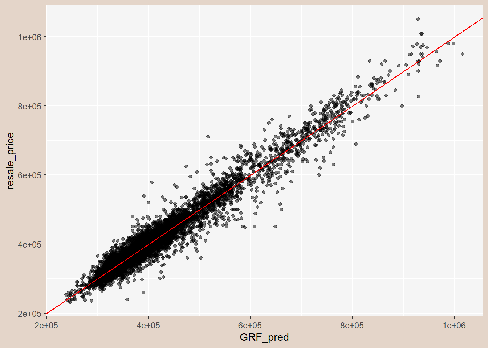
11 Reference
Kam, T. S. Geographically Weighted Predictive Models. R for Geospatial Data Science and Analytics. https://r4gdsa.netlify.app/chap14.html